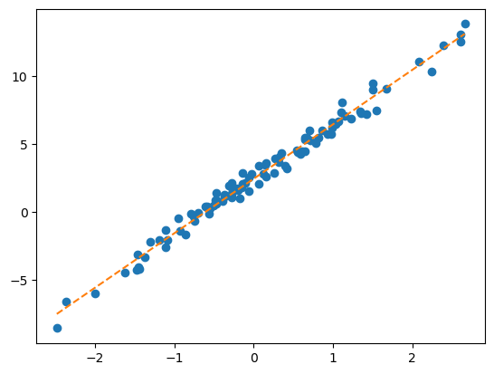

import torch
import pandas as pd
import matplotlib.pyplot as plt11wk-1: 추천시스템 (2) – Embedding 레이어, 사용자정의 네트워크, NN-based 추천시스템, A1-A2

1. 강의영상
2. Imports
3. torch.nn.Embedding
A. 임베딩레이어
- 모티브: torch.nn.functional.one_hot + torch.nn.Linear 를 매번 쓰는건 너무 귀찮지 않어?
torch.manual_seed(43052)
#x = ['옥순','영숙','하니','옥순','영숙']
x = torch.tensor([0,1,2,0,1])
E = torch.nn.functional.one_hot(x).float()
linr = torch.nn.Linear(3,1,bias=False)
lf = linr(E)
lftensor([[-0.2002],
[-0.4890],
[ 0.2081],
[-0.2002],
[-0.4890]], grad_fn=<MmBackward0>)- 코드를 뜯어보면..
linr.weightParameter containing:
tensor([[-0.2002, -0.4890, 0.2081]], requires_grad=True)E @ linr.weight.Ttensor([[-0.2002],
[-0.4890],
[ 0.2081],
[-0.2002],
[-0.4890]], grad_fn=<MmBackward0>)\({\boldsymbol x}= \begin{bmatrix} 0 \\ 1 \\ 2 \\ 0 \\ 1 \end{bmatrix} \Longrightarrow {\bf E}= \begin{bmatrix} 1 & 0 & 0 \\ 0 & 1 & 0 \\ 0 & 0 & 1 \\ 1 & 0 & 0 \\ 0 & 1 & 0 \end{bmatrix}\)
\(\text{linr}({\bf E})= \begin{bmatrix} 1 & 0 & 0 \\ 0 & 1 & 0 \\ 0 & 0 & 1 \\ 1 & 0 & 0 \\ 0 & 1 & 0 \end{bmatrix}\begin{bmatrix} -0.2002 \\ -0.4890 \\ 0.2081 \end{bmatrix} = \begin{bmatrix} -0.2002 \\ -0.4890 \\ 0.2081 \\ -0.2002 \\ -0.4890 \end{bmatrix}\)
- torch.nn.functional.one_hot + torch.nn.Linear 를 함께처리해주는 레이어 torch.nn.Embedding 존재
torch.manual_seed(43052)
ebdd = torch.nn.Embedding(3,1)
ebdd.weight.data = linr.weight.data.T
ebdd(x)tensor([[-0.2002],
[-0.4890],
[ 0.2081],
[-0.2002],
[-0.4890]], grad_fn=<EmbeddingBackward0>)\(\text{ebdd}({\boldsymbol x})= \text{linr}\big(\text{onehot}({\boldsymbol x})\big) = \begin{bmatrix} 1 & 0 & 0 \\ 0 & 1 & 0 \\ 0 & 0 & 1 \\ 1 & 0 & 0 \\ 0 & 1 & 0 \end{bmatrix}\begin{bmatrix} -0.2002 \\ -0.4890 \\ 0.2081 \end{bmatrix} = \begin{bmatrix} -0.2002 \\ -0.4890 \\ 0.2081 \\ -0.2002 \\ -0.4890 \end{bmatrix}\)
우리가 이전에 구현했던 코드 “onehot + linr” 와 “ebdd”는 정확하게 동일한 동작을 수행함.
- 결론: 아래의 두개의 코드는 같다.
X = torch.tensor([0,1,2,0,1])
## 코드1
linr = torch.nn.Linear(3,1)
linr(torch.nn.functional.one_hot(X))
## 코드2
ebdd = torch.nn.Embedding(3,1)
ebdd(X) # 의문: 그냥 원핫인코딩없이 바로 선형변환하면 안되나? (= 꼭 임베딩레이어를 써야하나?)
x = torch.tensor([0,1,2,0,1])
X = x.reshape(-1,1).float()
x,X(tensor([0, 1, 2, 0, 1]),
tensor([[0.],
[1.],
[2.],
[0.],
[1.]]))torch.manual_seed(43052)
l1 = torch.nn.Linear(1,1)
l1(X)tensor([[-0.8470],
[-1.1937],
[-1.5404],
[-0.8470],
[-1.1937]], grad_fn=<AddmmBackward0>)torch.manual_seed(43052)
ebdd = torch.nn.Embedding(3,1)
ebdd(x)tensor([[-0.8178],
[-0.7052],
[-0.5843],
[-0.8178],
[-0.7052]], grad_fn=<EmbeddingBackward0>)결과적으로 0,1,2 를 다른숫자들로 맵핑한건 비슷해보이는데?
- 수식의 차이: 비슷해보이지만 계산방식이 조금 다름
l1.weight, l1.bias(Parameter containing:
tensor([[-0.3467]], requires_grad=True),
Parameter containing:
tensor([-0.8470], requires_grad=True))\(l_1({\bf X}) = \begin{bmatrix} 0 \\ 1 \\ 2 \\ 0 \\ 1 \end{bmatrix} \times (-0.3467) + (-0.8470)=\begin{bmatrix} -0.8470 \\ -1.1937 \\ -1.5404 \\ -0.8470 \\ -1.1937 \end{bmatrix}\)
\(\text{ebdd}({\boldsymbol x})= \text{linr}\big(\text{onehot}({\boldsymbol x})\big) = \begin{bmatrix} 1 & 0 & 0 \\ 0 & 1 & 0 \\ 0 & 0 & 1 \\ 1 & 0 & 0 \\ 0 & 1 & 0 \end{bmatrix}\begin{bmatrix} -0.8178 \\ -0.7052 \\ -0.5843 \end{bmatrix} = \begin{bmatrix} -0.8178 \\ -0.7052 \\ -0.5843 \\ -0.8178 \\ -0.7052 \end{bmatrix}\)
- 데이터를 읽으며 해석: 사실상 0,1,2에 대한 의미는 “옥순”,“영숙”,“하니” 같은 자료였고, 임베딩의 결과는 “옥순”,“영숙”,“하니”가 가지는 어떠한 특징이었음 (예를들면 매력같은). 데이터를 상상하며 위의 결과를 다시 해석해보자.
옥순이 가지는 어떠한 특징 (-0.8470 혹은 -0.8178) 을 바꾸고 싶다면?
ebdd의 경우:ebdd.weigth에 있는 -0.8178 이라는 숫자를 조정하면 된다. 이 조정은 옥순의 특징만 바꾸며 영숙과 하니의 특징은 바꾸지 않는다. (개별조정이 쉬움)linr의 경우:linr.weight에 있는 -0.3467 혹은linr.bias에 있는 -0.8470 을 조정하면 되는데, 이를 조정하면 옥순의 특징을 바꿈과 동시에 영숙/하니의 특징까지 같이 바뀌게 된다. (개별조정이 어려움)
만약에 출연자가 1000명이라면??
linr의 경우: 1000명의 특징을 단 2개의 파라메터로 조정해야한다. (그리고 한명의 특징을 바꾸면 999명의 특징이 같이 바뀐다, 개별조정은 애초에 가능하지 않음.)ebdd의 경우: 1000개의 특징을 조정할 수 있는 1000개의 파라메터를 확보할 수 있게 된다.
- 결론: ebdd가 더 파라메터 미세조정을 통하여 특징을 학습하기 용이하다. (독립적으로 특징값을 줄 수 있으니까!)
만약에 문자열이 “최우수(A)”, “우수(B)”, “보통(C)”, “미흡(D)”, “매우미흡(F)” 이었다면 특징을 뽑아낼때 linr 가 더 적절했겠죠?
B. MF-based 추천시스템 재설계
아래의 자료를 활용하여 추천시스템을 설계하고자한다.
df_view = pd.read_csv('https://raw.githubusercontent.com/guebin/DL2024/main/posts/solo.csv',index_col=0)
df_view| 영식(IN) | 영철(IN) | 영호(IS) | 광수(IS) | 상철(EN) | 영수(EN) | 규빈(ES) | 다호(ES) | |
|---|---|---|---|---|---|---|---|---|
| 옥순(IN) | NaN | 4.02 | 3.45 | 3.42 | 0.84 | 1.12 | 0.43 | 0.49 |
| 영자(IN) | 3.93 | 3.99 | 3.63 | 3.43 | 0.98 | 0.96 | 0.52 | NaN |
| 정숙(IS) | 3.52 | 3.42 | 4.05 | 4.06 | 0.39 | NaN | 0.93 | 0.99 |
| 영숙(IS) | 3.43 | 3.57 | NaN | 3.95 | 0.56 | 0.52 | 0.89 | 0.89 |
| 순자(EN) | 1.12 | NaN | 0.59 | 0.43 | 4.01 | 4.16 | 3.52 | 3.38 |
| 현숙(EN) | 0.94 | 1.05 | 0.32 | 0.45 | 4.02 | 3.78 | NaN | 3.54 |
| 서연(ES) | 0.51 | 0.56 | 0.88 | 0.89 | 3.50 | 3.64 | 4.04 | 4.10 |
| 보람(ES) | 0.48 | 0.51 | 1.03 | NaN | 3.52 | 4.00 | 3.82 | NaN |
| 하니(I) | 4.85 | 4.82 | NaN | 4.98 | 4.53 | 4.39 | 4.45 | 4.52 |
df_train = df_view.stack().reset_index().set_axis(['W','M','y'],axis=1)
w = {'옥순(IN)':0, '영자(IN)':1, '정숙(IS)':2, '영숙(IS)':3, '순자(EN)':4, '현숙(EN)':5, '서연(ES)':6, '보람(ES)':7, '하니(I)':8}
m = {'영식(IN)':0, '영철(IN)':1, '영호(IS)':2, '광수(IS)':3, '상철(EN)':4, '영수(EN)':5, '규빈(ES)':6, '다호(ES)':7}
X1 = torch.tensor(df_train['W'].map(w)) # length-n int vector
X2 = torch.tensor(df_train['M'].map(m)) # length-n int vector
y = torch.tensor(df_train['y']).float().reshape(-1,1) # (n,1) float vector임베딩레이어를 활용하여 MF-based 추천시스템을 설계하라.
(풀이)
torch.manual_seed(43052)
ebdd1 = torch.nn.Embedding(9,2)
b1 = torch.nn.Embedding(9,1)
ebdd2 = torch.nn.Embedding(8,2)
b2 = torch.nn.Embedding(8,1)
sig = torch.nn.Sigmoid()
loss_fn = torch.nn.MSELoss()
params = list(ebdd1.parameters())+list(b1.parameters())+list(ebdd2.parameters())+list(b2.parameters())
optimizr = torch.optim.Adam(params, lr=0.1)
#--#
for epoc in range(100):
# 1
W_feature = ebdd1(X1)
W_bias = b1(X1)
M_feature = ebdd2(X2)
M_bias = b2(X2)
score = (W_feature * M_feature).sum(axis=1).reshape(-1,1) + W_bias + M_bias
yhat = sig(score)*5
# 2
loss = loss_fn(yhat,y)
# 3
loss.backward()
# 4
optimizr.step()
optimizr.zero_grad()torch.concat([yhat,y],axis=1)[::4]tensor([[4.1083, 4.0200],
[0.9388, 1.1200],
[4.0483, 3.9900],
[0.9707, 0.9600],
[4.2264, 4.0500],
[0.9518, 0.9900],
[0.5124, 0.5600],
[1.1198, 1.1200],
[4.0588, 4.1600],
[1.0596, 1.0500],
[3.9666, 3.7800],
[0.9472, 0.8800],
[3.9194, 4.0400],
[1.0346, 1.0300],
[4.8851, 4.8500],
[4.5387, 4.3900]], grad_fn=<SliceBackward0>)4. 사용자정의 네트워크
A. 사용자정의 네트워크 사용법
# 예비학습1: net(x)와 사실 net.forward(x)는 같다.
net = torch.nn.Sequential(
torch.nn.Linear(1,1),
torch.nn.Sigmoid()
)X = torch.randn(5,1)
Xtensor([[ 0.3837],
[ 0.7194],
[-0.2655],
[-1.2488],
[ 0.5538]])net(X)tensor([[0.3901],
[0.3808],
[0.4083],
[0.4362],
[0.3854]], grad_fn=<SigmoidBackward0>)net.forward(X)tensor([[0.3901],
[0.3808],
[0.4083],
[0.4362],
[0.3854]], grad_fn=<SigmoidBackward0>)그래서 net.forward를 재정의하면 net(x)의 기능을 재정의 할 수 있다.
net.forward = lambda x: '메롱'lambda x: '메롱'은 입력이 x 출력이 ’메롱’인 함수를 의미 (즉 입력값에 상관없이 항상 ’메롱’을 출력하는 함수)net.forward = lambda x:1이라고 새롭게 선언하였므로 앞으론net.forward(x),net(x)도 입력값에 상관없이 항상 ’메롱’을 출력하게 될것임
net.forward(X)'메롱'net(X)'메롱'#
# 예비학습2: torch.nn.Module을 상속받아서 네트워크를 만들면 (= “class XXX(torch.nn.Module):” 와 같은 방식으로 클래스를 선언하면) 약속된 아키텍처를 가진 네트워크를 찍어내는 함수를 만들 수 있다.
(예시1)
class Mynet1(torch.nn.Module):
def __init__(self):
super().__init__()
self.l1 = torch.nn.Linear(in_features=1,out_features=1,bias=True)
self.a1 = torch.nn.Sigmoid()
self.l2 = torch.nn.Linear(in_features=1,out_features=1,bias=False)
def forward(self,x):
yhat = self.l2(self.a1(self.l1(x)))
return yhat이제
net = Mynet1()는 아래와 같은 효과를 가진다.
net = torch.nn.Sequential(
torch.nn.Linear(in_features=1,out_features=1,bias=True),
torch.nn.Sigmoid(),
torch.nn.Linear(in_features=1,out_features=1,bias=False)
)(예시2)
class Mynet2(torch.nn.Module):
def __init__(self):
super().__init__()
self.l1 = torch.nn.Linear(in_features=1,out_features=1,bias=True)
self.a1 = torch.nn.ReLU()
self.l2 = torch.nn.Linear(in_features=1,out_features=1,bias=False)
def forward(self,x):
yhat = self.l2(self.a1(self.l1(x)))
return yhat이제
net = Mynet2()는 아래와 같은 효과를 가진다.
net = torch.nn.Sequential(
torch.nn.Linear(in_features=1,out_features=1,bias=True),
torch.nn.RuLU(),
torch.nn.Linear(in_features=1,out_features=1,bias=False)
)클래스에 대한 이해가 부족한 학생을 위한 암기방법
step1: 아래와 코드를 복사하여 틀을 만든다. (이건 무조건 고정임, XXXX 자리는 원하는 이름을 넣는다)
class XXXX(torch.nn.Module):
def __init__(self):
super().__init__()
## 우리가 yhat을 구할때 사용할 레이어를 정의
## 정의 끝
def forward(self,X):
## yhat을 어떻게 구할것인지 정의
## 정의 끝
return yhatforward의 입력:X는net(X)에 사용하는X임forward의 출력:yhat은net.forward(X)함수의 리턴값임- 사실,
X/yhat은 다른 변수로 써도 무방하나 (예를들면input/output이라든지,netin/netout이라든지) 설명의 편의상X와yhat을 고정한다.
step2: def __init__(self):에 yhat을 구하기 위해 필요한 재료를 레이어를 정의하고 이름을 붙인다. 이름은 항상 self.xxx 와 같은 식으로 정의한다.
class XXXX(torch.nn.Module):
def __init__(self):
super().__init__()
## 우리가 yhat을 구할때 사용할 레이어를 정의
self.xxx1 = torch.nn.Linear(in_features=1,out_features=1,bias=True)
self.xxx2 = torch.nn.Sigmoid()
self.xxx3 = torch.nn.Linear(in_features=1,out_features=1,bias=True)
## 정의 끝
def forward(self,X):
## yhat을 어떻게 구할것인지 정의
## 정의 끝
return yhatstep3: def forward:에 “X –> yhat” 으로 가는 과정을 묘사한 코드를 작성하고 yhat을 리턴하도록 한다.
class XXXX(torch.nn.Module):
def __init__(self):
super().__init__()
## 우리가 yhat을 구할때 사용할 레이어를 정의
self.xxx1 = torch.nn.Linear(in_features=1,out_features=1,bias=True)
self.xxx2 = torch.nn.Sigmoid()
self.xxx3 = torch.nn.Linear(in_features=1,out_features=1,bias=True)
## 정의 끝
def forward(self,X):
## yhat을 어떻게 구할것인지 정의
u = self.xxx1(X)
v = self.xxx2(u)
yhat = self.xxx3(v)
## 정의 끝
return yhat#
# 실습: 사용자정의 네트워크를 사용하여 아래의 자료를 학습해보자.
torch.manual_seed(43052)
x,_ = torch.randn(100).sort()
x = x.reshape(-1,1)
ϵ = torch.randn(100).reshape(-1,1)*0.5
y = 2.5+ 4*x + ϵplt.plot(x,y,'o')
(풀이)
class Net(torch.nn.Module):
def __init__(self):
super().__init__()
## 우리가 yhat을 구할때 사용할 레어어를 정의
self.linr = torch.nn.Linear(1,1)
## 정의 끝
def forward(self,X):
## yhat을 어떻게 구할것인지 정의
yhat = self.linr(X)
## 정의 끝
return yhatnet = Net()plt.plot(x,y,'o')
plt.plot(x,net(x).data,'--') # 최초의 직선
net = Net()
loss_fn = torch.nn.MSELoss()
optimizr = torch.optim.SGD(net.parameters(),lr=0.1)
for epoc in range(30):
# 1
yhat = net(x)
# 2
loss = loss_fn(yhat,y)
# 3
loss.backward()
# 4
optimizr.step()
optimizr.zero_grad()plt.plot(x,y,'o')
plt.plot(x,net(x).data,'--')
#
B. MF-based 추천시스템 재설계
아래의 자료를 활용하여 추천시스템을 설계하고자한다.
df_view = pd.read_csv('https://raw.githubusercontent.com/guebin/DL2024/main/posts/solo.csv',index_col=0)
df_view| 영식(IN) | 영철(IN) | 영호(IS) | 광수(IS) | 상철(EN) | 영수(EN) | 규빈(ES) | 다호(ES) | |
|---|---|---|---|---|---|---|---|---|
| 옥순(IN) | NaN | 4.02 | 3.45 | 3.42 | 0.84 | 1.12 | 0.43 | 0.49 |
| 영자(IN) | 3.93 | 3.99 | 3.63 | 3.43 | 0.98 | 0.96 | 0.52 | NaN |
| 정숙(IS) | 3.52 | 3.42 | 4.05 | 4.06 | 0.39 | NaN | 0.93 | 0.99 |
| 영숙(IS) | 3.43 | 3.57 | NaN | 3.95 | 0.56 | 0.52 | 0.89 | 0.89 |
| 순자(EN) | 1.12 | NaN | 0.59 | 0.43 | 4.01 | 4.16 | 3.52 | 3.38 |
| 현숙(EN) | 0.94 | 1.05 | 0.32 | 0.45 | 4.02 | 3.78 | NaN | 3.54 |
| 서연(ES) | 0.51 | 0.56 | 0.88 | 0.89 | 3.50 | 3.64 | 4.04 | 4.10 |
| 보람(ES) | 0.48 | 0.51 | 1.03 | NaN | 3.52 | 4.00 | 3.82 | NaN |
| 하니(I) | 4.85 | 4.82 | NaN | 4.98 | 4.53 | 4.39 | 4.45 | 4.52 |
df_train = df_view.stack().reset_index().set_axis(['W','M','y'],axis=1)
w = {'옥순(IN)':0, '영자(IN)':1, '정숙(IS)':2, '영숙(IS)':3, '순자(EN)':4, '현숙(EN)':5, '서연(ES)':6, '보람(ES)':7, '하니(I)':8}
m = {'영식(IN)':0, '영철(IN)':1, '영호(IS)':2, '광수(IS)':3, '상철(EN)':4, '영수(EN)':5, '규빈(ES)':6, '다호(ES)':7}
X1 = torch.tensor(df_train['W'].map(w)) # length-n int vector
X2 = torch.tensor(df_train['M'].map(m)) # length-n int vector
y = torch.tensor(df_train['y']).float().reshape(-1,1) # (n,1) float vector사용자정의 네트워크를 이용하여 MF-based 추천시스템을 설계하라.
(풀이1) – net(X1,X2)
class Net(torch.nn.Module):
def __init__(self):
super().__init__()
#--#
self.ebdd1 = torch.nn.Embedding(9,2)
self.ebdd2 = torch.nn.Embedding(8,2)
self.b1 = torch.nn.Embedding(9,1)
self.b2 = torch.nn.Embedding(8,1)
self.sig = torch.nn.Sigmoid()
def forward(self,X1,X2):
W_feature = self.ebdd1(X1)
W_bias = self.b1(X1)
M_feature = self.ebdd2(X2)
M_bias = self.b2(X2)
score = (W_feature * M_feature).sum(axis=1).reshape(-1,1) + W_bias + M_bias
yhat = sig(score) * 5
return yhatnet = Net()
loss_fn = torch.nn.MSELoss()
optimizr = torch.optim.Adam(net.parameters(),lr=0.1) # 이게 편해요!!
#--#
for epoc in range(100):
# 1
yhat = net(X1,X2)
# 2
loss = loss_fn(yhat,y)
# 3
loss.backward()
# 4
optimizr.step()
optimizr.zero_grad()torch.concat([yhat.data,y],axis=1)[::5]tensor([[3.9088, 4.0200],
[0.6968, 0.4300],
[3.4267, 3.4300],
[3.5181, 3.4200],
[0.9098, 0.9900],
[0.7797, 0.5200],
[0.5975, 0.4300],
[0.9656, 0.9400],
[3.8616, 3.7800],
[0.8109, 0.8900],
[0.4865, 0.4800],
[3.9685, 3.8200],
[4.6336, 4.3900]])(풀이2) – net(X)
X = torch.stack([X1,X2],axis=1)
X[:5]tensor([[0, 1],
[0, 2],
[0, 3],
[0, 4],
[0, 5]])X[:,0], X[:,1](tensor([0, 0, 0, 0, 0, 0, 0, 1, 1, 1, 1, 1, 1, 1, 2, 2, 2, 2, 2, 2, 2, 3, 3, 3,
3, 3, 3, 3, 4, 4, 4, 4, 4, 4, 4, 5, 5, 5, 5, 5, 5, 5, 6, 6, 6, 6, 6, 6,
6, 6, 7, 7, 7, 7, 7, 7, 8, 8, 8, 8, 8, 8, 8]),
tensor([1, 2, 3, 4, 5, 6, 7, 0, 1, 2, 3, 4, 5, 6, 0, 1, 2, 3, 4, 6, 7, 0, 1, 3,
4, 5, 6, 7, 0, 2, 3, 4, 5, 6, 7, 0, 1, 2, 3, 4, 5, 7, 0, 1, 2, 3, 4, 5,
6, 7, 0, 1, 2, 4, 5, 6, 0, 1, 3, 4, 5, 6, 7]))class Net(torch.nn.Module):
def __init__(self):
super().__init__()
#--#
self.ebdd1 = torch.nn.Embedding(9,2)
self.ebdd2 = torch.nn.Embedding(8,2)
self.b1 = torch.nn.Embedding(9,1)
self.b2 = torch.nn.Embedding(8,1)
self.sig = torch.nn.Sigmoid()
def forward(self,X):
X1,X2 = X[:,0],X[:,1]
W_feature = self.ebdd1(X1)
W_bias = self.b1(X1)
M_feature = self.ebdd2(X2)
M_bias = self.b2(X2)
score = (W_feature * M_feature).sum(axis=1).reshape(-1,1) + W_bias + M_bias
yhat = sig(score) * 5
return yhatnet = Net()
loss_fn = torch.nn.MSELoss()
optimizr = torch.optim.Adam(net.parameters(),lr=0.1) # 이게 편해요!!
#--#
for epoc in range(100):
# 1
yhat = net(X)
# 2
loss = loss_fn(yhat,y)
# 3
loss.backward()
# 4
optimizr.step()
optimizr.zero_grad()torch.concat([yhat.data,y],axis=1)[::5]tensor([[4.1003, 4.0200],
[0.5432, 0.4300],
[3.5055, 3.4300],
[3.3474, 3.4200],
[0.9624, 0.9900],
[0.6404, 0.5200],
[0.4905, 0.4300],
[0.7304, 0.9400],
[4.0403, 3.7800],
[0.8519, 0.8900],
[0.6959, 0.4800],
[3.8667, 3.8200],
[4.4733, 4.3900]])5. NN-based 추천시스템
A. NN-based 방식
아래의 자료를 활용하여 추천시스템을 설계하고자한다.
df_view = pd.read_csv('https://raw.githubusercontent.com/guebin/DL2024/main/posts/solo.csv',index_col=0)
df_view| 영식(IN) | 영철(IN) | 영호(IS) | 광수(IS) | 상철(EN) | 영수(EN) | 규빈(ES) | 다호(ES) | |
|---|---|---|---|---|---|---|---|---|
| 옥순(IN) | NaN | 4.02 | 3.45 | 3.42 | 0.84 | 1.12 | 0.43 | 0.49 |
| 영자(IN) | 3.93 | 3.99 | 3.63 | 3.43 | 0.98 | 0.96 | 0.52 | NaN |
| 정숙(IS) | 3.52 | 3.42 | 4.05 | 4.06 | 0.39 | NaN | 0.93 | 0.99 |
| 영숙(IS) | 3.43 | 3.57 | NaN | 3.95 | 0.56 | 0.52 | 0.89 | 0.89 |
| 순자(EN) | 1.12 | NaN | 0.59 | 0.43 | 4.01 | 4.16 | 3.52 | 3.38 |
| 현숙(EN) | 0.94 | 1.05 | 0.32 | 0.45 | 4.02 | 3.78 | NaN | 3.54 |
| 서연(ES) | 0.51 | 0.56 | 0.88 | 0.89 | 3.50 | 3.64 | 4.04 | 4.10 |
| 보람(ES) | 0.48 | 0.51 | 1.03 | NaN | 3.52 | 4.00 | 3.82 | NaN |
| 하니(I) | 4.85 | 4.82 | NaN | 4.98 | 4.53 | 4.39 | 4.45 | 4.52 |
df_train = df_view.stack().reset_index().set_axis(['W','M','y'],axis=1)
w = {'옥순(IN)':0, '영자(IN)':1, '정숙(IS)':2, '영숙(IS)':3, '순자(EN)':4, '현숙(EN)':5, '서연(ES)':6, '보람(ES)':7, '하니(I)':8}
m = {'영식(IN)':0, '영철(IN)':1, '영호(IS)':2, '광수(IS)':3, '상철(EN)':4, '영수(EN)':5, '규빈(ES)':6, '다호(ES)':7}
X1 = torch.tensor(df_train['W'].map(w)) # length-n int vector
X2 = torch.tensor(df_train['M'].map(m)) # length-n int vector
y = torch.tensor(df_train['y']).float().reshape(-1,1) # (n,1) float vectorNN-based 추천시스템을 설계하라.
(풀이1) – 실패
class Net(torch.nn.Module):
def __init__(self):
super().__init__()
#--#
self.ebdd1 = torch.nn.Embedding(9,2)
self.ebdd2 = torch.nn.Embedding(8,2)
self.b1 = torch.nn.Embedding(9,1)
self.b2 = torch.nn.Embedding(8,1)
self.mlp = torch.nn.Sequential(
torch.nn.Linear(6,1),
torch.nn.Sigmoid()
)
def forward(self,X1,X2):
W_feature = self.ebdd1(X1)
M_feature = self.ebdd2(X2)
W_bias = self.b1(X1)
M_bias = self.b2(X2)
Z = torch.concat([W_feature,M_feature,W_bias,M_bias],axis=1)
yhat = self.mlp(Z) * 5
return yhatnet = Net()
loss_fn = torch.nn.MSELoss()
optimizr = torch.optim.Adam(net.parameters(),lr=0.1) # 이게 편해요!!
#--#
for epoc in range(1000):
# 1
yhat = net(X1,X2)
# 2
loss = loss_fn(yhat,y)
# 3
loss.backward()
# 4
optimizr.step()
optimizr.zero_grad()torch.concat([yhat.data,y],axis=1)[::5]tensor([[2.1566, 4.0200],
[1.6908, 0.4300],
[2.6466, 3.4300],
[2.7759, 3.4200],
[2.5815, 0.9900],
[2.3104, 0.5200],
[2.6402, 0.4300],
[1.7232, 0.9400],
[2.3892, 3.7800],
[2.4107, 0.8900],
[1.9775, 0.4800],
[2.0164, 3.8200],
[4.7447, 4.3900]])- 못하겠네?
(풀이2) – 에라 모르겠다 깊은신경망..
class Net(torch.nn.Module):
def __init__(self):
super().__init__()
#--#
self.ebdd1 = torch.nn.Embedding(9,2)
self.ebdd2 = torch.nn.Embedding(8,2)
self.b1 = torch.nn.Embedding(9,1)
self.b2 = torch.nn.Embedding(8,1)
self.mlp = torch.nn.Sequential(
torch.nn.Linear(6,15),
torch.nn.ReLU(),
torch.nn.Linear(15,15),
torch.nn.ReLU(),
torch.nn.Linear(15,1),
torch.nn.Sigmoid()
)
def forward(self,X1,X2):
W_feature = self.ebdd1(X1)
M_feature = self.ebdd2(X2)
W_bias = self.b1(X1)
M_bias = self.b2(X2)
Z = torch.concat([W_feature,M_feature,W_bias,M_bias],axis=1)
yhat = self.mlp(Z) * 5
return yhattorch.manual_seed(43052)
net = Net()
loss_fn = torch.nn.MSELoss()
optimizr = torch.optim.Adam(net.parameters(),lr=0.1) # 이게 편해요!!
#--#
for epoc in range(1000):
# 1
yhat = net(X1,X2)
# 2
loss = loss_fn(yhat,y)
# 3
loss.backward()
# 4
optimizr.step()
optimizr.zero_grad()torch.concat([yhat.data,y],axis=1)[::5]tensor([[4.0276, 4.0200],
[0.4426, 0.4300],
[3.4343, 3.4300],
[3.4210, 3.4200],
[0.9852, 0.9900],
[0.5153, 0.5200],
[0.4402, 0.4300],
[0.9483, 0.9400],
[3.8077, 3.7800],
[0.8960, 0.8900],
[0.4833, 0.4800],
[3.8466, 3.8200],
[4.3930, 4.3900]])- 잘 맞추긴했는데 불안함
df_view| 영식(IN) | 영철(IN) | 영호(IS) | 광수(IS) | 상철(EN) | 영수(EN) | 규빈(ES) | 다호(ES) | |
|---|---|---|---|---|---|---|---|---|
| 옥순(IN) | NaN | 4.02 | 3.45 | 3.42 | 0.84 | 1.12 | 0.43 | 0.49 |
| 영자(IN) | 3.93 | 3.99 | 3.63 | 3.43 | 0.98 | 0.96 | 0.52 | NaN |
| 정숙(IS) | 3.52 | 3.42 | 4.05 | 4.06 | 0.39 | NaN | 0.93 | 0.99 |
| 영숙(IS) | 3.43 | 3.57 | NaN | 3.95 | 0.56 | 0.52 | 0.89 | 0.89 |
| 순자(EN) | 1.12 | NaN | 0.59 | 0.43 | 4.01 | 4.16 | 3.52 | 3.38 |
| 현숙(EN) | 0.94 | 1.05 | 0.32 | 0.45 | 4.02 | 3.78 | NaN | 3.54 |
| 서연(ES) | 0.51 | 0.56 | 0.88 | 0.89 | 3.50 | 3.64 | 4.04 | 4.10 |
| 보람(ES) | 0.48 | 0.51 | 1.03 | NaN | 3.52 | 4.00 | 3.82 | NaN |
| 하니(I) | 4.85 | 4.82 | NaN | 4.98 | 4.53 | 4.39 | 4.45 | 4.52 |
(옥순-영식), (영자-다호), (하니-영호) 를 예측해보자.
XX1 = torch.tensor([0,1,8])
XX2 = torch.tensor([1,7,2])net(XX1,XX2)tensor([[4.0114],
[0.5262],
[4.9767]], grad_fn=<MulBackward0>)그럴싸함.. (오버피팅 아닌듯)
B. NCF (He et al. 2017)
He, Xiangnan, Lizi Liao, Hanwang Zhang, Liqiang Nie, Xia Hu, and Tat-Seng Chua. 2017. “Neural Collaborative Filtering.” In Proceedings of the 26th International Conference on World Wide Web, 173–82.

A1. 자잘한 용어 정리 (\(\star\))
A. 지도학습
- 우리가 수업에서 다루는 데이터는 주로 아래와 같은 느낌이다.
데이터는 \((X,y)\)의 형태로 정리되어 있다.
\(y\)는 우리가 관심이 있는 변수이다. 즉 우리는 \(y\)를 적절하게 추정하는 것에 관심이 있다.
\(X\)는 \(y\)를 추정하기 위해 필요한 정보이다.
| \(X\) = 설명변수 = 독립변수 | \(y\) = 반응변수 = 종속변수 | 비고 | 순서 | 예시 |
|---|---|---|---|---|
| 이미지 | 카테고리 | 합성곱신경망 | 상관없음 | 개/고양이 이미지 구분 |
| 유저,아이템 | 평점 | 추천시스템 | 상관없음 | 넷플릭스 영화추천 |
| 과거~오늘까지의주가 | 내일주가 | 순환신경망 | 순서상관있음 | 주가예측 |
| 처음 \(m\)개의 단어(혹은 문장) | 이후 1개의 단어(혹은 문장) | 순환신경망 | 순서상관있음 | 챗봇, 텍스트생성 |
| 처음 \(m\)개의 단어(혹은 문장) | 카테고리 | 순환신경망 | 순서상관있음 | 영화리뷰 텍스트 감정분류 |
- 이러한 문제상황, 즉 \((X,y)\)가 주어졌을때 \(X \to y\)를 추정하는 문제를 supervised learning 이라한다.
B. 모델이란?
모델이란 단어는 제 발작버튼이었어요..
- 통계학에서 모델은 y와 x의 관계를 의미하며 오차항의 설계를 포함하는 개념이다. 이는 통계학이 “데이터 = 정보 + 오차”의 관점을 유지하기 때문이다. 따라서 통계학에서 모델링이란
\[y_i = net(x_i) + \epsilon_i\]
에서 (1) 적절한 함수 \(net\)를 선택하는 일 (2) 적절한 오차항 \(\epsilon_i\) 을 설계하는일 모두를 포함한다.
- 딥러닝 혹은 머신러닝에서 모델은 단순히
\[y_i \approx net(x_i)\]
를 의미하는 경우가 많다. 즉 “model=net”라고 생각해도 무방하다. 이 경우 “모델링”이란 단순히 적절한 \(net\)을 설계하는 것만을 의미할 경우가 많다.
- 그래서 생긴일
- 통계학교재 특: 분류문제와 회귀문제를 엄밀하게 구분하지 않는다. 사실 오차항만 다를뿐이지 크게보면 같은 회귀모형이라는 관점이다. 그래서 일반화선형모형(GLM)이라는 용어를 쓴다.
- 머신러닝/딥러닝교재 특: 회귀문제와 분류문제를 구분해서 설명한다. (표도 만듦) 이는 오차항에 대한 기술을 모호하게 하여 생기는 현상이다.
C. 학습이란?
- 학습이란 주어진 자료 \((X,y)\)를 잘 분석하여 \(X\)에서 \(y\)로 가는 어떠한 “규칙” 혹은 “원리”를 찾는 것이다.
- 학습이란 주어진 자료 \((X,y)\)를 잘 분석하여 \(X\)에서 \(y\)로 가는 어떠한 “맵핑”을 찾는 것이다.
- 학습이란 주어진 자료 \((X,y)\)를 잘 분석하여 \(X\)에서 \(y\)로 가는 어떠한 “함수”을 찾는 것이다. 즉 \(y\approx f(X)\)가 되도록 만드는 \(f\)를 잘 찾는 것이다. (이 경우 “함수를 추정한다”라고 표현)
- 학습이란 주어진 자료 \((X,y)\)를 잘 분석하여 \(X\)에서 \(y\)로 가는 어떠한 “모델” 혹은 “모형”을 찾는 것이다. 즉 \(y\approx model(X)\)가 되도록 만드는 \(model\)을 잘 찾는 것이다. (이 경우 “모형을 학습시킨다”라고 표현)
- 학습이란 주어진 자료 \((X,y)\)를 잘 분석하여 \(X\)에서 \(y\)로 가는 어떠한 “네트워크”을 찾는 것이다. 즉 \(y\approx net(X)\)가 되도록 만드는 \(net\)을 잘 찾는 것이다. (이 경우 “네트워크를 학습시킨다”라고 표현)
- prediction이란 학습과정에서 찾은 “규칙” 혹은 “원리”를 \(X\)에 적용하여 \(\hat{y}\)을 구하는 과정이다. 학습과정에서 찾은 규칙 혹은 원리는 \(f\),\(model\),\(net\) 으로 생각가능한데 이에 따르면 아래가 성립한다.
- \(\hat{y} = f(X)\)
- \(\hat{y} = model(X)\)
- \(\hat{y} = net(X)\)
D. \(\hat{y}\)를 부르는 다양한 이름
- \(\hat{y}\)는 \(X\)가 주어진 자료에 있는 값인지 아니면 새로운 값 인지에 따라 지칭하는 이름이 미묘하게 다르다.
\(X \in data\): \(\hat{y}=net(X)\) 는 predicted value, fitted value 라고 부른다.
\(X \notin data\): \(\hat{y}=net(X)\) 는 predicted value, predicted value with new data 라고 부른다.
E. 다양한 코드들
- 파이썬 코드..
#Python
predictor.fit(X,y) # autogluon 에서 "학습"을 의미하는 과정
model.fit(X,y) # sklearn 에서 "학습"을 의미하는 과정
learner.learn() # fastai 에서 "학습"을 의미하는 과정
learner.fine_tune(1) # fastai 에서 "부분학습"을 의미하는 과정
learner.predict(cat1) # fastai 에서 "예측"을 의미하는 과정
model.fit(x, y, batch_size=32, epochs=10) # keras에서 "학습"을 의미하는 과정
model.predict(test_img) # keras에서 "예측"을 의미하는 과정 - R 코드..
# R
ols <- lm(y~x) # 선형회귀분석에서 학습을 의미하는 함수
ols$fitted.values # 선형회귀분석에서 yhat을 출력
predict(ols, newdata=test) # 선형회귀분석에서 test에 대한 예측값을 출력하는 함수
ols$coef # 선형회귀분석에서 weight를 확인하는 방법A2. 참고자료들
- 케라스/텐서플로우: https://guebin.github.io/STBDA2022/
- 상속: https://guebin.github.io/PP2023/posts/03_Class/2023-06-12-15wk-1.html
- sklearn/autogluon: https://guebin.github.io/MP2023/
- 리눅스관련: https://guebin.github.io/DSTBX2024/ – 자료 부실함.. 강의영상 없는것 많음..
- 클래스기본: https://guebin.github.io/PP2023/ – 10wk-2 ~ 15wk-1